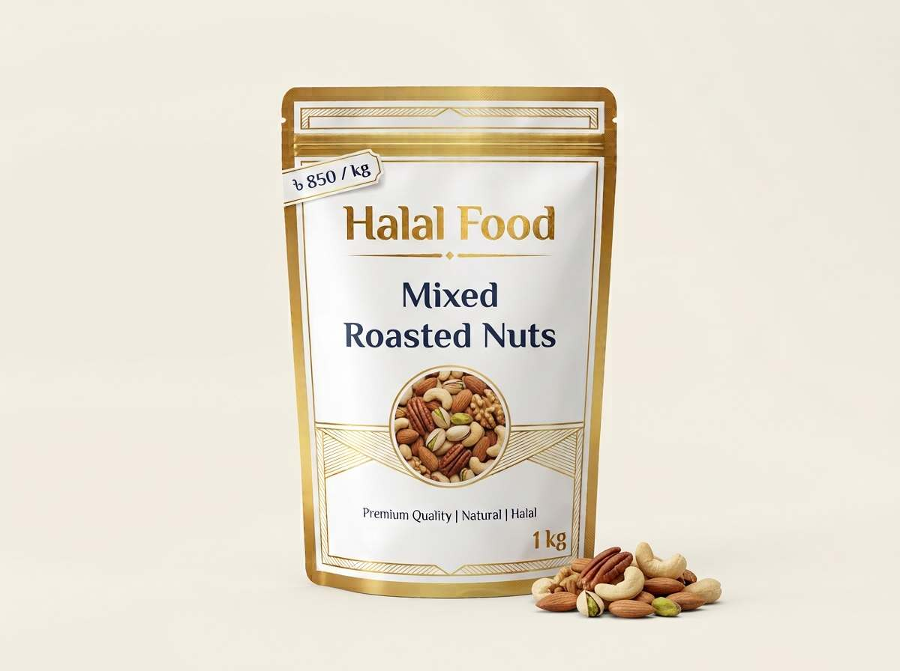

Blog / Nuts & Seeds
Roasted Mixed Nuts in Bangladesh: Benefits, Price and How to Choose

Roasted mixed nuts in Bangladesh are a favourite snack for tea time, long office days, travel and Iftar. They are crunchy, tasty and easy to carry. But a packet of mixed nuts can be very healthy or not so healthy, depending on what is inside and how it is roasted. In this guide, we explain what roasted mixed nuts contain, how healthy they are, how much to eat, what price to expect, and how to pick fresh nuts that are not too salty.
Quick answer: Roasted mixed nuts give protein, fibre and good fats, so they make a better snack than fried or sugary snacks. But they are rich in calories, and salted mixes can carry a lot of sodium. Choose dry roasted or lightly salted nuts, keep your portion to a small handful, and buy from a seller who gives clear details about the pack.
What Is in Roasted Mixed Nuts?
A mix of roasted nuts usually has several kinds of nuts in one pack. A typical mix may include:
- Almonds (kath badam)
- Cashew nuts (kaju badam)
- Peanuts (chinabadam)
- Pistachios, walnuts or hazelnuts in some premium mixes
- Sometimes raisins or other dried fruit
The exact mix changes from seller to seller. Peanuts are cheaper, so mixes with a lot of peanuts usually cost less than mixes with more almonds, cashews and pistachios. Always check what is inside the pack and in what share.
Are Roasted Mixed Nuts Healthy?
Yes, they can be a healthy snack when you eat a sensible amount. Nuts give protein, fibre and mostly unsaturated fat, along with minerals such as magnesium.
Here are approximate values for one small handful (28 g). We worked them out from standard food database numbers for mixes that include peanuts.
| Point | Dry roasted mix | Oil roasted mix |
|---|---|---|
| Calories | About 165 | About 170–175 |
| Protein | About 5 g | About 4–5 g |
| Fibre | About 2.5 g | About 2.5 g |
| Total fat | About 14 g | About 15–16 g |
| Saturated fat | About 2 g | About 2–2.5 g |
Per 100 g, a salted dry roasted mix with peanuts has about 594 calories, 17 g protein and 9 g fibre. An oil roasted mix with peanuts has a little more, at about 617 calories and 56 g of fat per 100 g. These numbers change with the nuts in your mix, so please treat them as a guide. Dry roasted mixed nuts nutrition and oil roasted mixed nuts nutrition.
The main point is simple: nuts are healthy, but they are also dense in calories. A small handful is helpful. A big bowl in front of the TV is too much.
Dry Roasted vs Oil Roasted Nuts
Dry roasted nuts are heated without added oil. Oil roasted nuts are cooked in oil. Both taste good, but there are small differences.
- Calories and fat: Dry roasted nuts usually have a little less fat and fewer calories, because no extra oil is added. In the case of peanuts, dry roasted ones are lower in calories and fat than oil roasted ones. Source: nutrition comparison.
- Taste: Oil roasted nuts often feel richer and a bit crunchier.
- Salt: This is where you need to be careful, as we explain below.
For everyday snacking, dry roasted nuts are a good choice. If you eat oil roasted nuts, keep the portion small.
Watch the Salt
Salt makes the biggest difference in a packet of mixed nuts. A salted dry roasted mix has about 669 mg of sodium per 100 g, while the same mix without added salt has only about 12 mg. Too much sodium over time can raise blood pressure. Dry roasted salted nuts can carry more sodium than oil roasted ones, because less fat means makers may add more salt for flavour. Choosing unsalted nuts removes this gap. Source: mixed nuts nutrition information.
So, if you eat nuts often, look for unsalted or lightly salted mixes. If you have high blood pressure or heart disease, ask your doctor, and choose unsalted nuts.
Roasted vs Raw Nuts
Raw and roasted nuts both give nutrients, and both are good choices. Roasting makes nuts crunchier and gives a deeper smell and taste, so many people enjoy roasted nuts more. A small amount of heat-sensitive nutrients may drop with roasting, but the change is small, and the biggest difference comes from added oil, salt or sugar.
A simple rule: plain roasted nuts are fine. Nuts coated with salt, sugar, honey or heavy spice are more of a treat than a daily snack.
Benefits of Eating Roasted Mixed Nuts
- A filling snack. The mix of protein, fibre and fat helps you feel full for longer than biscuits or fried snacks.
- Good fats. Most of the fat in nuts is unsaturated, which is better for the heart than many fried snacks.
- A range of nutrients. Different nuts bring different strengths. For example, almonds give vitamin E and calcium, and cashews give zinc and iron. You can read more in our guide to almonds vs cashews.
- Easy and ready to eat. No cooking, no cutting, and it fits in your bag.
Nuts are one useful part of a balanced diet. They are not a cure for any disease, and they work best together with fruit, vegetables and regular movement.
Who Should Be Careful?
- People with nut or peanut allergy. Nut allergy can be serious. Mixes often contain several nuts, and traces can pass between them. If you have an allergy, avoid mixed nuts unless a doctor says it is safe.
- People with high blood pressure. Choose unsalted nuts.
- People with diabetes or kidney problems. Ask your doctor how many nuts are right for you.
- People who are watching their weight. Measure your portion. Do not eat straight from the packet.
- Young children. Whole nuts are a choking risk for small children. Give chopped nuts or nut paste, and only if there is no allergy.
How Many Roasted Mixed Nuts Should You Eat?
A small handful, around 28 g, is a good daily portion for most healthy adults. That is about a quarter of a cup. If you are very active, you may eat a little more. If you are trying to lose weight, stick to one small handful and count it as a snack, not an extra.
Tip: pour the nuts into a small bowl instead of eating from the packet. It is much easier to stop.
Mixed Roasted Nuts Price in Bangladesh
Prices depend on the nuts in the mix, the roast, the pack size and the seller, and they rise before Ramadan and Eid. A Bangladeshi online price list for August 2026 showed a mixed nut pack at about Tk 1,541 per kg. A mix with more almonds, cashews and pistachios will cost more than a mix with mostly peanuts. Source: BDStall nuts price listings.
When you compare prices, check the weight and what is inside the pack. A low price per kg may only mean the mix has more peanuts and fewer premium nuts.
How to Choose Fresh Roasted Nuts
- Smell first. Fresh roasted nuts smell warm and nutty. A sharp, sour or paint-like smell means the oil has gone rancid.
- Taste a few. Old nuts taste bitter or stale.
- Check the colour. Look for an even golden-brown colour. Dark or burnt pieces taste bitter.
- Check the salt. A heavy white coat of salt on the nuts is a warning sign.
- Read the pack. Look for the net weight, the packing date, the ingredients list and the seller details.
- Pick a clean, sealed pack. Loose nuts left open in humid weather can go soft and stale quickly.
How to Store Roasted Nuts
Roasted nuts go stale faster than raw nuts, because roasting brings the natural oils closer to the surface. Keep them in an airtight container, in a cool, dry place, away from sunlight. In hot and humid weather, the fridge is the better place. Use a dry spoon and close the lid after each use. Try to finish a pack within a few weeks for the best taste.
Easy Ways to Enjoy Roasted Mixed Nuts
- As a snack with tea or coffee in the afternoon
- At Iftar, together with a few dates (see our Dates collection)
- On top of salads, oats or yoghurt for crunch
- In polao or biryani as a topping, lightly crushed
- In your bag as a small travel pack for school, office or a trip
- As a gift, packed in a clean box for Eid or a family visit
Frequently Asked Questions
Are roasted mixed nuts good for you?
Yes, in a small amount. They give protein, fibre and healthy fats. Choose unsalted or lightly salted mixes, and keep your portion to a small handful.
Is dry roasted better than oil roasted?
Dry roasted nuts have a little less fat and fewer calories. But salted dry roasted nuts can have more sodium, so the best choice is dry roasted and unsalted.
How many roasted mixed nuts can I eat a day?
About 28 g, which is a small handful, is a common portion for most healthy adults.
Are roasted nuts healthier than raw nuts?
Both are good. Raw nuts have no added salt or oil, while roasted nuts taste better to many people. Plain roasted nuts are a fine choice.
Can roasted mixed nuts help with weight loss?
They can be a filling snack that replaces fried or sugary snacks, but they are high in calories. Portion size decides whether they help or not.
Where can I buy roasted mixed nuts online in Bangladesh?
You can order from the Halal Food Nuts and Seeds collection and get them delivered to your home.
Final Thoughts
Roasted mixed nuts are a simple, tasty and filling snack, and they can be a smart part of your day when you choose well. Look for plain or lightly salted nuts, check what is inside the mix, keep your portion small, and store the pack properly. That way, you get the crunch and the nutrition without the extra salt and calories.
Ready to order? Visit our Nuts and Seeds collection to choose fresh nuts for your home.